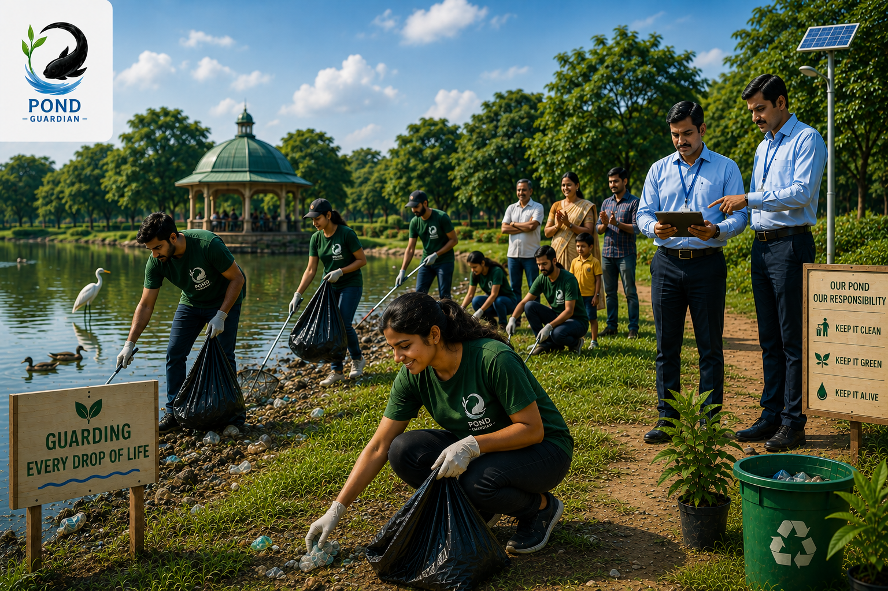

01
Report
Citizens can report pollution, waste and other problems affecting water bodies.

From identifying a problem to taking action, PondGuardian connects the community with the people who can help.
Citizens can report pollution, waste and other problems affecting water bodies.
Reported issues can be reviewed and tracked through the platform.
Officials can review reported problems and take appropriate action.
Together, we work towards cleaner and healthier water bodies.
Ponds, lakes, rivers and dams are an important part of our communities. But pollution, waste and neglect can slowly damage them.
PondGuardian gives citizens a simple way to bring attention to these problems and helps connect reports with action.